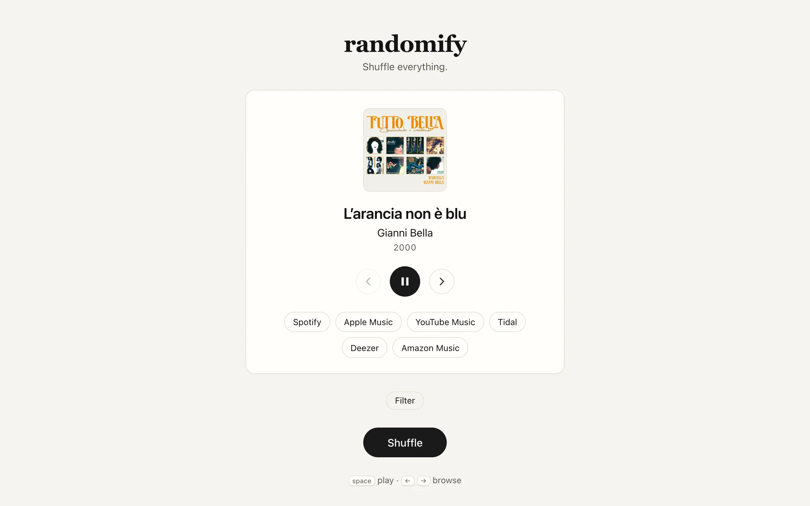

Randomify is a shuffle button pointed at everything ever recorded. Each press draws one song from a corpus built out of MusicBrainz, plays a 30-second preview, and shows buttons that open the same track on Spotify, Apple Music, YouTube Music, Tidal, Deezer, Amazon Music, and, when an exact link exists, Pandora and Bandcamp. The interesting problems were what "random" should mean over a catalog where popularity follows a long tail, drawing a song in one database round trip, and turning a MusicBrainz recording into working links on services that mostly don't want to be linked to.
Tempered sampling
Uniform sampling over songs would let an artist with 2,000 registered recordings come up a thousand times more often than one with two singles, and crowded genres would drown out everything else. Uniform over artists overcorrects the other way. So a spin walks down a hierarchy: a facet value, then an artist, then a release group, then a recording, where the facet is one of genre, decade, country, or language, picked at random per spin. At every level a node with \(n\) streamable songs beneath it is chosen with probability
\[ P(i) = \frac{n_i^{\alpha}}{\sum_j n_j^{\alpha}}, \qquad \alpha = 0.4. \]At \(\alpha = 0\) every branch is equally likely and obscure artists are heavily over-weighted. I picked 0.4 by ear and the app has no knob for it.
One query per spin
The tempered weights are precomputed into prefix-sum tables, indexed on partition and cumulative weight, for each facet value, each artist within a facet value, and each release group within an artist. Picking a node is a point lookup: scale a uniform draw by the partition total and take the first row whose cumulative weight crosses it. The Worker generates the draws, and one SQL query of chained CTEs resolves all four levels, joins the display metadata, and aggregates the platform links as JSON.
Finding the song
The corpus is anchored on Deezer because its API looks up by ISRC without authentication. The resolver spaces requests 220 ms apart, about 4.5 a second, under Deezer's limit of 50 per 5 seconds, and a recording enters the corpus only if the lookup returns an exact match with a playable preview. I don't trust the match blindly. Candidate and query are normalized (diacritics stripped, featuring credits and remaster tags removed) and scored with a Sorensen-Dice coefficient over token sets, title weighted 0.5, artist 0.3, duration agreement 0.2. Even an ISRC hit needs 0.5, because a wrong ISRC in MusicBrainz or on the platform would otherwise ship a wrong link.
Deezer preview URLs expire within hours, so I store a stable /preview/{id} path and the Worker mints a fresh URL at play time, answering with a 302 cached at the edge for 45 seconds.